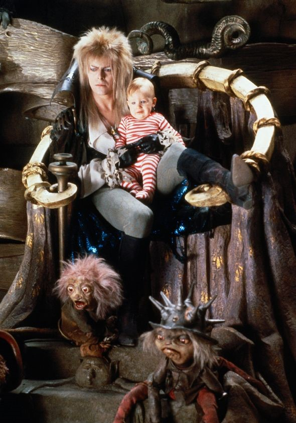
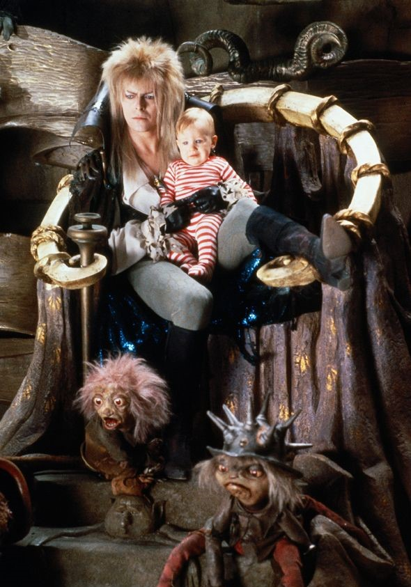

LLegaste al Castillo de Jareth
Elegiste el camino correcto! Conseguiste llegar rapido al castillo, donde Jareth, el rey de los duendes, te está esperando para entregarte a tu medio hermano como lo habian acordado. Vuelven a casa sanos y salvos!
Elegiste el camino correcto! Conseguiste llegar rapido al castillo, donde Jareth, el rey de los duendes, te está esperando para entregarte a tu medio hermano como lo habian acordado. Vuelven a casa sanos y salvos!
